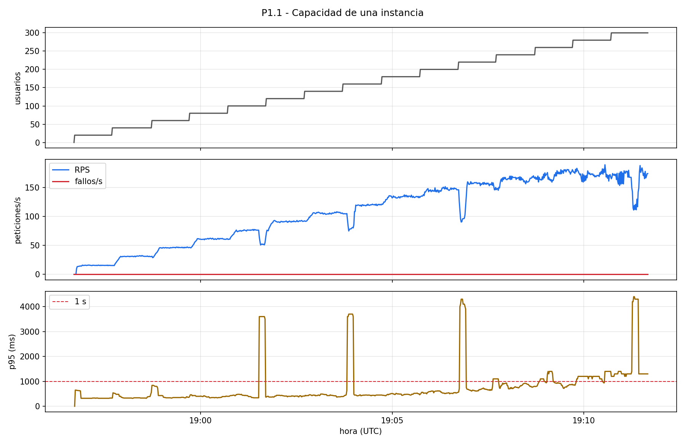
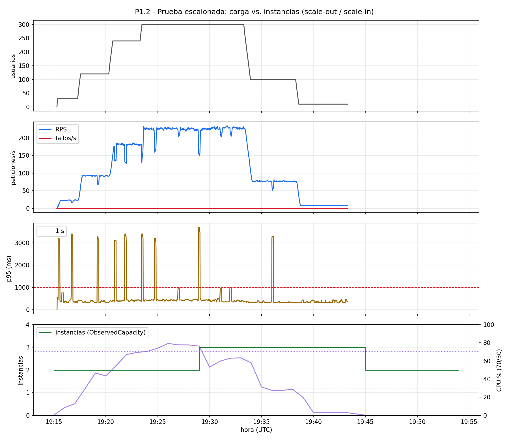
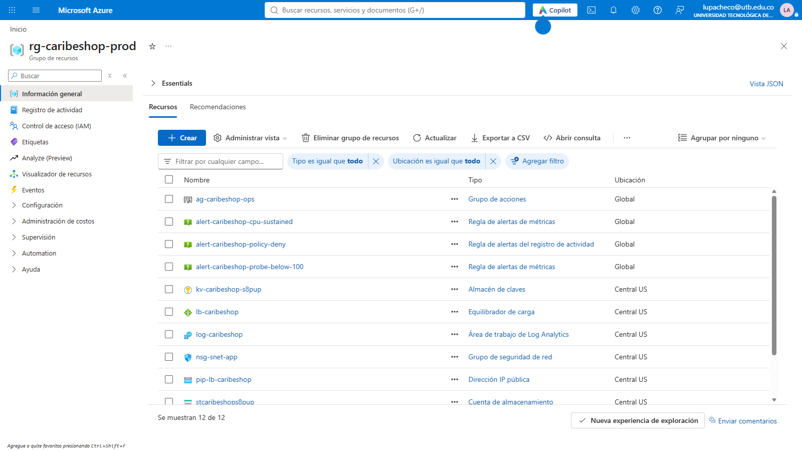
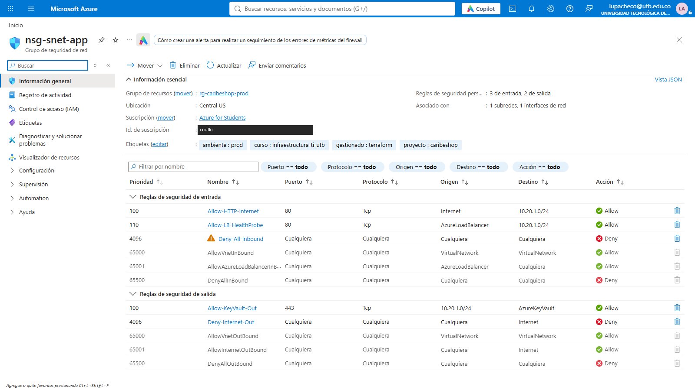
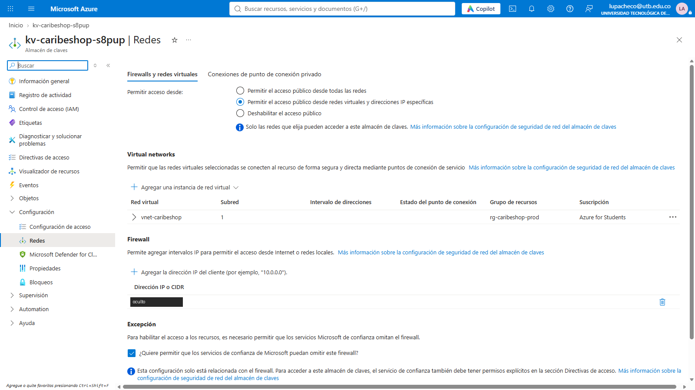
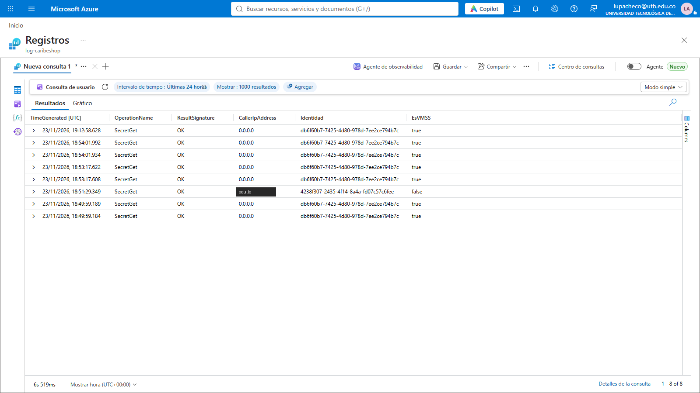
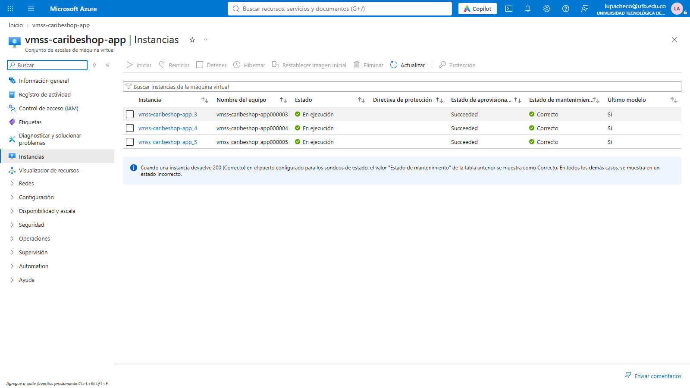
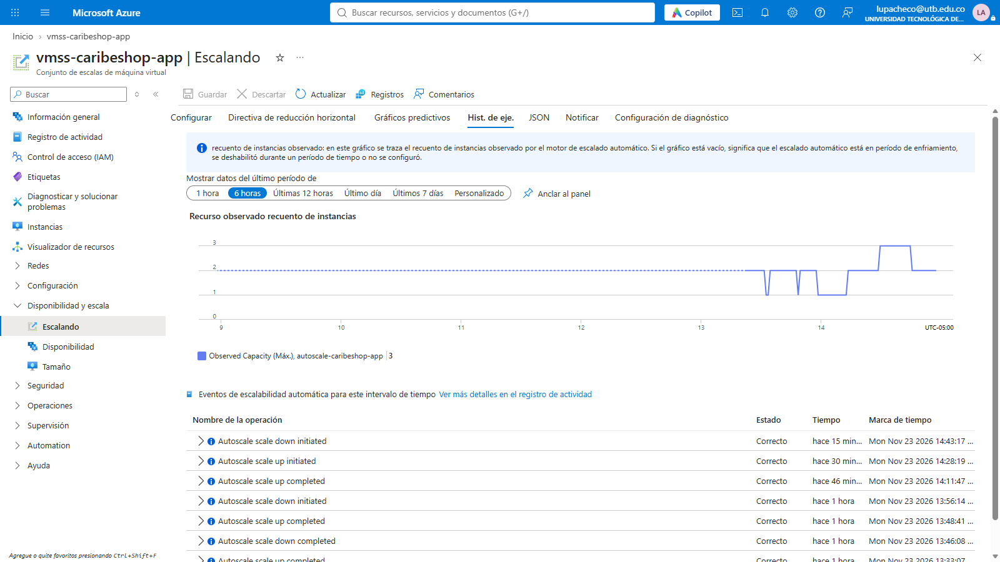
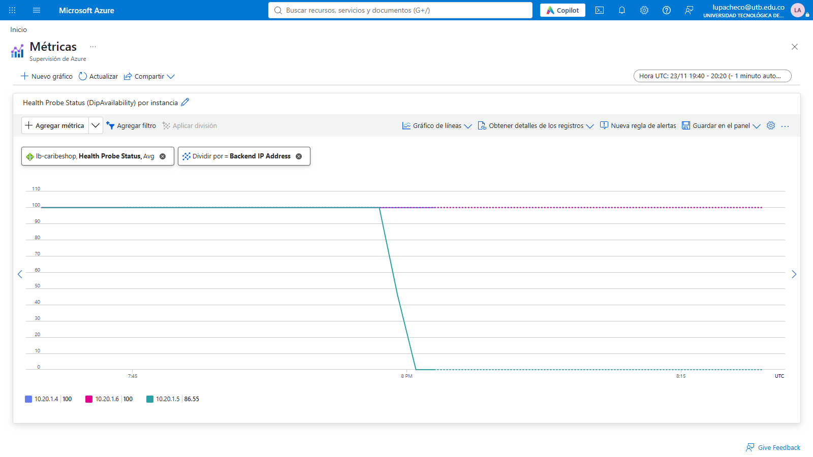
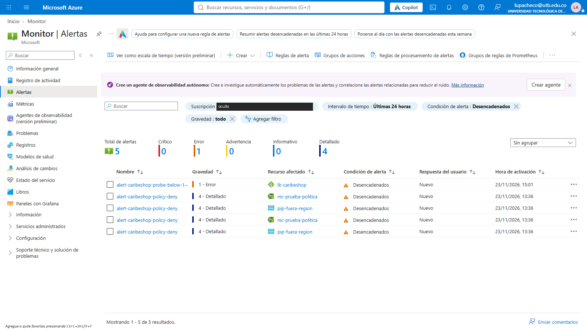

Universidad Tecnológica de Bolívar
Infraestructura para TI
Azure · Terraform · GitHub Actions · Checkov · Locust
| Integrantes | ______________________________ ______________________________ ______________________________ |
| Repositorio | https://github.com/______/______ |
| Video | https://youtu.be/______ |
| Fecha | Noviembre de 2026 |
CaribeShop (Cartagena) sufrió dos caídas en la campaña anterior: una por saturación durante una promoción y otra por la falla de su única máquina virtual. Una auditoría encontró además la contraseña de la base de datos en el repositorio y el puerto SSH abierto a Internet. Este informe documenta la plataforma construida en Azure, completamente como código (Terraform) y con un pipeline DevSecOps, que es segura, escala automáticamente y sigue funcionando ante la falla de un componente, junto con la evidencia empírica obtenida con pruebas de carga, de falla y de seguridad sobre el despliegue real (23-nov-2026, región centralus, suscripción Azure for Students).
Figura 1. Arquitectura desplegada
| Decisión | Justificación |
|---|---|
| Load Balancer Standard (no App Gateway) | Cumple E2 a bajo costo (~18 USD/mes vs ~180+ USD de App Gateway WAF v2). Riesgo aceptado: sin TLS/WAF (ver tabla de riesgos). |
Sin salida a Internet (subred sin default outbound, LB sin SNAT, NSG Deny Internet) |
Una instancia comprometida no puede descargar herramientas ni exfiltrar a sitios arbitrarios (P3.2). Única salida: AzureKeyVault:443. |
| App solo con librería estándar de Python | Sin Internet no hay pip install; además cero dependencias = superficie mínima y arranque en segundos. |
| Prefork (1 proceso por vCPU) | Por el GIL, un proceso nunca pasa del 50 % de CPU en una B2ps_v2 y el autoscale (70 %) no se dispararía. Con carga se aprovechan las 2 vCPU. |
| HTTP/1.1 keep-alive (máx. 50 peticiones por conexión) y cola de conexiones de 1024 | Evita reintentos de handshake TCP (+1 s) y mantiene la redistribución del LB tras un scale-out o una reparación; con /health en 503 la app cierra las conexiones vivas para que los clientes pasen a instancias sanas. |
| Standard_B2ps_v2 (Arm64) en centralus | Restricciones de la suscripción Azure for Students: 5 regiones permitidas, y el único tamaño serie B con zonas disponible es Arm64. La app no tiene dependencias nativas, así que corre igual. |
| Rol con alcance al secreto (no al vault) | S4 más estricto: la identidad del VMSS solo puede get sobre db-password. |
Secreto generado por Terraform (random_password) |
El valor nunca existe en Git ni en variables; solo en el estado remoto cifrado y en Key Vault. |
Rolling upgrade + health_probe_id |
Requisito de Azure para reparación automática basada en la sonda del LB (E4) y cambios sin caída. |
| Histéresis 70 % / 30 %, cooldown 5 / 10 min | Ver comentario en infra/compute.tf y la sección 2.1. |
ignore_changes = [instances]: sin él, cada terraform apply devolvería el VMSS a 2 instancias en plena carga.| Req. | Archivo / recurso Terraform | Evidencia |
|---|---|---|
| S1 | infra/backend.tf (backend azurerm, use_azuread_auth), infra/bootstrap/bootstrap-backend.sh, .gitignore, job gitleaks |
Bloque backend; git log --all -- '*.tfstate' '*.tfvars' vacío; gitleaks en verde |
| S2 | network.tf: azurerm_subnet.app (service endpoints, default_outbound_access_enabled=false), azurerm_network_security_group.app, azurerm_lb_rule.http (disable_outbound_snat) |
Código NSG; az vmss list-instance-public-ips vacío; p3-s2-*.txt; P3.2 |
| S3 | security.tf: azurerm_key_vault.main (RBAC, purge protection, network_acls), azurerm_key_vault_secret.db_password (expiration_date); app/app.py /secret-check |
Respuesta de /secret-check (longitud + SHA-256 truncado); P3.1 Forbidden desde Cloud Shell |
| S4 | security.tf: azurerm_role_assignment.vmss_kv_secret_reader (alcance = secreto) |
az role assignment list --assignee <principal_id> --all → 1 fila |
| S5 | policy.tf: azurerm_resource_group_policy_assignment.deny_nic_public_ip, .allowed_locations |
Captura RequestDisallowedByPolicy (P3.3) + correo de alerta |
| S6 | monitoring.tf: azurerm_monitor_diagnostic_setting.kv (AuditEvent) + azurerm_log_analytics_workspace.main |
KQL AZKVAuditLogs con SecretGet por el oid del VMSS |
| E1 | compute.tf: azurerm_linux_virtual_machine_scale_set.app (zones=["1","2"], instances=2) |
az vmss list-instances ... zona |
| E2 | network.tf: azurerm_public_ip.lb (zonas 1-2-3), azurerm_lb.main, azurerm_lb_probe.health (/health) |
Código de la sonda + métrica Health Probe Status |
| E3 | compute.tf: azurerm_monitor_autoscale_setting.app (70/30, PT5M/PT10M), lifecycle.ignore_changes=[instances] |
Run history + gráfico p1-escalonada.png |
| E4 | compute.tf: automatic_instance_repair + health_probe_id + upgrade_mode="Rolling" |
Instancia reemplazada en P2.1 (instanceId nuevo + Activity Log) |
| E5 | monitoring.tf: azurerm_monitor_metric_alert.probe_degraded, .cpu_sustained, azurerm_monitor_action_group.ops |
Correo recibido / historial de alertas |
| D1 | .github/workflows/ci.yml |
Ejecución verde + PR rojo (CKV_AZURE_10) — docs/PR-DEMO.md |
| D2 | #checkov:skip en security.tf, network.tf, compute.tf |
Sección 6 de este informe |
| D3 | infra/templates/cloud-init.yaml.tftpl, app/app.py |
Instancias nuevas (scale-out/repair) sirven sin intervención |
SLA publicados (Microsoft, Service Level Agreements for Online Services):
| Componente en la ruta crítica | SLA |
|---|---|
| IP pública Standard | 99,99 % |
| Load Balancer Standard | 99,99 % |
| VMSS / VMs en ≥ 2 zonas de disponibilidad (≥ 2 instancias) | 99,99 % |
Key Vault (solo para /secret-check; la app cachea el secreto 5 min) |
99,99 % |
| Log Analytics, alertas, Storage | fuera de la ruta de la petición |
Ruta de una compra (/): componentes en serie ⇒ se multiplican.
SLA = 0,9999 (IP) × 0,9999 (LB) × 0,9999 (VMSS multi-zona) = 0,99970 ⇒ 99,97 %
Indisponibilidad máxima: (1 − 0,9997) × 43 800 min/mes ≈ 13,1 min/mes
Incluyendo Key Vault (ruta que lee el secreto): 0,9999⁴ = 99,96 % ⇒ ≈ 17,5 min/mes.
Comparación con la arquitectura anterior (1 VM, disco Standard SSD): 99,5 % ⇒ ≈ 3,65 h/mes. Con Premium SSD: 99,9 % ⇒ ≈ 43,8 min/mes. La nueva arquitectura reduce la indisponibilidad permitida ~17 veces.
Matiz para el informe: el SLA cubre la plataforma, no la aplicación. Un despliegue defectuoso o un error de código no los cubre ningún SLA; por eso existen el rolling upgrade con la sonda y la reparación automática.
Entorno: centralus, VMSS Standard_B2ps_v2 (2 vCPU Arm64) en zonas 1 y 2, Locust ejecutado desde Cartagena (RTT ≈ 110-120 ms a centralus).
| Usuarios | RPS medio | p95 máx. del escalón (ms) |
|---|---|---|
| 80 | 59,8 | 460 |
| 120 | 90,2 | 440 |
| 140 | 104,3 | 490 |
| 180 | 133,1 | 530 |
| 200 | 145,1 | 620 |
| 240 | 163,6 | 1 100 |
| 280 | 172,1 | 1 400 |
Capacidad sostenible: ≈ 145 RPS con p95 ≤ 1 s; saturación en ≈ 170 RPS (CPU ≈ 87 %). Gráfico en la figura 2.

Los picos aislados de p95 (~3 s) en algunos escalones corresponden a retransmisiones de SYN en la red del cliente, no al servidor (ver «Hallazgos»).
| Métrica | Valor |
|---|---|
| Peticiones totales | 210 918 |
| Fallos | 0 (0 %) |
| Mediana / p95 / p99 | 300 ms / 430 ms / 1,5 s |
| RPS en el pico (300 usuarios) | ≈ 230 |
| Scale-out 2 → 3 | decisión 19:28:19, instancia nueva 19:29 (≈ 6 min tras CPU > 70 %) |
| Scale-in 3 → 2 | decisión 19:43:17, efectivo 19:45 (tras 10 min con CPU < 30 %) |
| CPU máx. con 2 instancias / con 3 | 79 % / 63 % |
La figura 3 alinea en el tiempo usuarios, RPS, p95 (Locust) con instancias y CPU (Azure Monitor).

Historial del autoscale: evidencias/p1-autoscale-historial.txt y anexo A6.
Ambas con carga moderada de 40 usuarios (Locust) más una sonda externa cada 0,5 s con conexiones nuevas (scripts/monitor.py).
| Métrica | P2.1 Falla lógica (/health → 503) |
P2.2 Falla abrupta (instancia eliminada) |
|---|---|---|
| Inicio de la falla (UTC) | 20:12:12,95, en 000003 (zona 1) |
20:28:35,08, az vmss delete-instances sobre 000006 (zona 2) |
| Última respuesta de la instancia afectada | 20:12:15,89 | 20:28:37,91 |
| Tiempo hasta salir de rotación | ≈ 2,9 s (sonda 5 s × 2; la app además cierra sus conexiones vivas) | ≈ 3 s (conexiones cortadas al apagar la VM) |
| Peticiones en la ventana (Locust) | 5 731 (20:12:10-20:15:20) | 5 713 (20:28:30-20:31:40) |
| Peticiones fallidas (Locust) | 6 (/health 503 servidos por conexiones ya abiertas) |
3 (RemoteDisconnected / ConnectionReset a las 20:28:38) |
| % de error en la ventana (Locust) | 0,105 % | 0,053 % |
| Sonda externa (monitor) | 287 peticiones, 0 errores (0 %) | 187 peticiones, 2 errores (1,07 %) entre 20:28:38 y 20:28:42 |
| Recuperación de la capacidad mínima | La reparación automática reemplazó 000003 por 000007 (zona 1) |
≈ 2 min: 000008 responde desde las 20:30:35 |
Nota sobre P2.1: desde las 20:18:45 la red del cliente perdió la resolución DNS (getaddrinfo failed en Locust y en Azure CLI), así que los errores posteriores no corresponden a la plataforma y se excluyen de la ventana medida. Evidencias: p2-falla-logica_*.csv, p2-falla-logica-monitor.csv, p2-falla-abrupta_*.csv, p2-falla-abrupta-monitor.csv, p2-falla-abrupta-tiempos.txt.
| Hora (UTC) | Evento |
|---|---|
| 19:58:47 | /health de vmss-caribeshop-app000004 (zona 2) pasa a 503 |
| ≈ 19:58:57 | La sonda la marca caída (2 × 5 s); la métrica Health Probe Status de 10.20.1.5 baja a 0 % (anexo A7) |
| 20:01:22 | Se dispara alert-caribeshop-probe-below-100 (Sev1) → correo (anexo A8) |
| 20:04:11 | La reparación automática elimina 000004 y crea 000006 en la misma zona |
| 20:04:50 | 000006 en servicio: capacidad mínima restaurada ≈ 6 min después de la falla, sin intervención |
| Prueba | Resultado | Evidencia |
|---|---|---|
| S2: IP pública en instancias | Ninguna (solo IPs privadas 10.20.1.x) | p3-s2-ips-publicas.txt |
| S2: SSH 22 desde Internet | Cerrado (timeout) | p3-s2-nsg.txt, anexo A2 |
| S4: roles de la identidad del VMSS | 1 asignación: Key Vault Secrets User con alcance .../secrets/db-password |
p3-s4-roles.txt |
S3: /secret-check |
longitud: 32, sha256_truncado: 28fad9b27883, nunca el valor |
p3-s3-secret-check.json |
| P3.1: Key Vault desde red no autorizada | El mismo usuario, con el rol Key Vault Secrets Officer, recibe (Forbidden) Client address is not authorized / ForbiddenByFirewall cuando su red no está en el firewall (se retiró temporalmente la IP del operador porque Cloud Shell no llegó a aprovisionarse en la suscripción de estudiante; después se restauró y terraform plan confirmó «No changes») |
p3-p3-1-kv-red-no-autorizada.txt |
| P3.2: egress desde una instancia | https://example.com → timeout (BLOQUEADO); Key Vault → 200; IMDS → OK |
p3-p3-2-egress.txt |
| P3.3 / S5: NIC con IP pública | RequestDisallowedByPolicy (deny-nic-public-ip) |
p3-p3-3-policy-nic.txt |
| P3.3 / S5: recurso en westus3 | RequestDisallowedByPolicy (allowed-locations) |
p3-p3-3-policy-location.txt |
S6: KQL AZKVAuditLogs |
SecretGet OK por el oid del VMSS (EsVMSS = true) |
p3-s6-kql-secretget.txt, anexo A4 |
listen backlog) = 5: el valor por defecto de socketserver provocaba syncookies y retransmisiones de SYN-ACK a 1 s (TcpExtTCPSynRetrans = 139 de 2 012 conexiones). Se amplió a 1 024.ubuntu-24_04-lts/server-arm64; la app (Python estándar) funciona sin cambios.#checkov:skip)| # | Origen | Riesgo aceptado | Impacto | Probabilidad | Mitigación actual / futura |
|---|---|---|---|---|---|
| 1 | CKV_AZURE_160 (NSG) |
HTTP 80 abierto a Internet, sin TLS | Alto: tráfico en claro (sesiones, datos de compra) | Media | Es el servicio público. Futuro: Application Gateway WAF v2 o Front Door con HTTPS y redirección 80→443 |
| 2 | CKV_AZURE_189 (Key Vault) |
Endpoint público del vault habilitado | Medio | Baja | Firewall Deny + solo snet-app e IP del operador + RBAC. Futuro: Private Endpoint |
| 3 | CKV2_AZURE_32 (Key Vault) |
Sin Private Endpoint | Medio | Baja | Service endpoint (tráfico por la red troncal de Azure). Futuro: PE + zona DNS privada (~8 USD/mes) |
| 4 | CKV_AZURE_97 (VMSS) |
Sin encryption at host (caché/temporales sin cifrar en el host) | Bajo: instancias sin estado ni datos de clientes | Muy baja | Discos con SSE + PMK. Futuro: registrar EncryptionAtHost y activarlo |
| 5 | CKV2_AZURE_1 (Storage) |
Llaves administradas por Microsoft, no CMK | Bajo | Muy baja | AES-256 + cifrado de infraestructura (doble cifrado) |
| 6 | CKV2_AZURE_33 (Storage) |
Sin Private Endpoint | Medio | Baja | Firewall Deny, sin llaves compartidas, solo Entra ID |
| 7 | CKV_AZURE_59 (Storage) |
Acceso de red público habilitado | Medio | Baja | Igual que #6 |
| 8 | CKV_AZURE_33 (Storage) |
Sin registro del servicio de colas | Nulo | — | No se usan colas |
| 9 | CKV_AZURE_206 (Storage) |
ZRS en lugar de GRS | Medio ante caída regional | Muy baja | ZRS tolera la caída de una zona; GRS duplicaría el costo |
| 10 | CKV_AZURE_43 (Storage) |
Falso positivo: nombre dinámico | Nulo | — | var.prefix validado con regex |
| 11 | CKV2_AZURE_21 (contenedor) |
Sin logs de lectura de blobs | Bajo | Baja | Contenedor privado sin consumidores aún |
| 12 | Diseño | La salida a AzureKeyVault permite llegar a cualquier Key Vault de Azure: posible canal de exfiltración |
Medio | Baja | Requiere RCE previa. Futuro: Private Endpoint + Deny AzureKeyVault (solo IP privada del PE) |
| 13 | Diseño | /simulate-failure expuesto públicamente |
Bajo | Baja | Solo responde a operator_ip; la falla expira (máx. 30 min); en producción se elimina |
| 14 | Diseño | Instancias serie B: créditos de CPU | Medio: la capacidad cae al 40 % de línea base si se agotan | Media en campañas | Producción: D2as_v5/F2s_v2 (ver pregunta 1) |
| 15 | Diseño | Una sola región | Alto ante caída regional | Muy baja | Ver pregunta 3 |
| 16 | Diseño | El estado de Terraform contiene el secreto y la llave SSH privada | Alto si se filtra | Baja | Ver pregunta 6 |
| Recurso | Cálculo | USD/mes |
|---|---|---|
| VMSS 2 × Standard_B2ps_v2 (Linux, Arm64) | 2 × 0,0336 × 730 | 49,06 |
| Discos SO 2 × StandardSSD E4 (32 GiB) | 2 × 2,40 | 4,80 |
| Load Balancer Standard (≤ 5 reglas) | 0,025 × 730 (+ 0,005/GB procesado) | 18,25 + datos |
| IP pública Standard estática | 0,005 × 730 | 3,65 |
| Key Vault Standard | ~50 k operaciones × 0,03/10 k | 0,15 |
| Log Analytics | ~3 GB × ~2,30-2,76 | ~8,00 |
| Storage ZRS (poco uso) | ~1,00 | |
| Alertas de métrica (2 series) | 2 × 0,10 | 0,20 |
| Total base (2 instancias) | ≈ 85 USD | |
| Cada instancia adicional (B2ps_v2 + disco) | +26,93 | |
| Fijo en el pico (3 instancias 24/7) | ≈ 112 USD |
Efecto del autoscale: si la carga exige 3 instancias solo ~4 h/día, el promedio es 2 + 4/24 ≈ 2,17 instancias ⇒ ≈ 90 USD/mes en lugar de 112 USD si se dimensionara fijo para el pico (ahorro ≈ 22 %). El ahorro crece con la relación pico/valle: con el dimensionamiento de la pregunta 1 (6 instancias en el pico, 2 en el valle), un despliegue fijo costaría ≈ 190 USD/mes y el autoscale ≈ 95 USD/mes si el pico dura ~4 h diarias.
Otras palancas: savings plan/reservas a 1 año para las 2 instancias base (−30 a −40 %), apagar el entorno de pruebas fuera de horario, daily_quota_gb en Log Analytics.
Medición de P1.1 (1 instancia Standard_B2ps_v2, evidencias/p1-capacidad_stats_history.csv): con p95 ≤ 1 s la instancia sostiene ≈ 145 RPS (200 usuarios) y se satura en ≈ 170 RPS con la CPU al ≈ 87 %. Con el objetivo más estricto de p95 < 500 ms, el último escalón que lo cumple es C₅₀₀ ≈ 104 RPS (140 usuarios, p95 490 ms). Dimensionando la CPU objetivo al 70 % (el umbral de scale-out) y con N+1 para tolerar la caída de una zona:
N = ⌈ 300 / (C₅₀₀ × 0,7) ⌉ + 1 = ⌈ 300 / (104 × 0,7) ⌉ + 1 = ⌈ 4,12 ⌉ + 1 = 5 + 1 = 6 instancias B2ps_v2 = 12 vCPU
¿Es viable con la cuota? No. La suscripción Azure for Students tiene 6 vCPU regionales en centralus (az vm list-usage: cores = 6; familia Bpsv2 = 10). Con esa cuota el máximo son 3 × B2ps_v2, que en la prueba escalonada sostuvieron ≈ 230 RPS con p95 de 430 ms, insuficiente para 300 RPS con margen y tolerancia a la caída de una zona. Cambios: (1) pedir aumento de cuota; (2) dejar la serie B, porque con los créditos agotados la B2ps_v2 cae al 40 % de línea base y C₅₀₀ se derrumba en una campaña larga, y pasar a D2as_v5/F2s_v2 o a tamaños mayores (F4s_v2) para tener menos instancias; (3) bajar el costo por petición con caché o CDN para los estáticos y el catálogo, y un servidor de aplicación más eficiente; (4) repartir en 3 zonas para que N+1 cueste menos (perder una zona de 3 es perder 33 %, frente al 50 % con 2).
Tiempo medido en P1.2 (evidencias/p1-vmss-cpu.json, p1-autoscale-historial.txt):
| Hito | Hora (UTC) | Δ desde el cruce del 70 % |
|---|---|---|
| CPU promedio del VMSS supera el 70 % | 19:24 | 0 |
| El autoscale decide el scale-out (Autoscale scale up initiated) | 19:28:19 | 4 min 19 s (ventana de 5 min) |
| La 3.ª instancia aparece en ObservedCapacity | 19:29 | ≈ 5 min |
| La CPU baja al 53 % (la instancia nueva ya recibe tráfico) | 19:30 | ≈ 6 min |
El scale-in fue igual de predecible: la CPU quedó por debajo del 30 % desde las 19:36, el autoscale decidió a las 19:43:17 (ventana de 10 min) y volvió a 2 instancias a las 19:45. Ante un pico súbito, el autoscale reactivo llega ≈ 6 min tarde: en ese lapso las instancias existentes absorben la carga (en la prueba sin errores, pero con la CPU entre 70 y 80 %). Ajustes:
hcl
profile {
name = "campana-8pm"
capacity { minimum = 6 default = 6 maximum = 10 }
recurrence { timezone = "SA Pacific Standard Time" days = ["Monday","Tuesday","Wednesday","Thursday","Friday","Saturday","Sunday"] hours = [19] minutes = [30] }
# + las mismas reglas de CPU
}
# y un perfil "fin-campana" a las 23:30 que vuelve a min 2hcl
predictive { scale_mode = "Enabled" look_ahead_time = "PT15M" } # empezar con "ForecastOnly" para validartime_window = "PT2M", escalar de a 2 instancias o por porcentaje (PercentChangeCount), cooldown de scale-out de 3 min.Dentro de la región no hay un SPOF de infraestructura: la IP y el LB son zonales-redundantes, el VMSS está en 2 zonas y Key Vault y Storage (ZRS) toleran la caída de una zona. El punto único de falla es la región (centralus): ante una caída regional se cae todo. También son SPOF "lógicos" el único LB y el único Key Vault ante un error de configuración o un borrado accidental, y el estado de Terraform para operar (no para servir).
Eliminarlo: un despliegue activo-pasivo o activo-activo en una segunda región (el mismo Terraform con otro location, como módulo o workspace) y Azure Front Door Standard como entrada global con sondas de salud. Costo aproximado: +85 USD (segunda pila) + ~35 USD de Front Door base + solicitudes ⇒ ≈ +120 USD/mes (≈ 2,4 × el costo actual). El Key Vault ya tiene conmutación por error de solo lectura a la región emparejada. Si luego se agrega una base de datos, hará falta replicación geográfica (p. ej. Azure SQL con failover group).
| Capa | Qué puede hacer | Qué no puede hacer |
|---|---|---|
| Proceso | Ejecutar código como usuario dinámico sin privilegios (DynamicUser) |
Escribir en el sistema de archivos (ProtectSystem=strict), escalar privilegios (NoNewPrivileges), cargar módulos de kernel |
| Identidad (IMDS) | Pedir un token de la identidad administrada | Usarlo para algo distinto de leer db-password: no lista ni lee otros secretos, no escribe, no borra, no tiene rol en ARM (no puede crear VMs, IPs ni cambiar el NSG) |
| Red de salida | Llegar a Key Vault por 443 | Descargar herramientas o hablar con un C2 en Internet (sin default outbound, sin SNAT y con NSG Deny Internet). Residual: la etiqueta AzureKeyVault incluye cualquier vault, que podría servir de canal de exfiltración (riesgo #12) |
| Red lateral | — | Conectarse a otras instancias (NSG Deny-All-Inbound también bloquea el tráfico dentro de la VNet); SSH/RDP cerrados |
| Gobierno | — | Crear una NIC con IP pública ni recursos en otras regiones (Azure Policy Deny), aunque obtuviera más permisos |
| Disponibilidad | Romper su instancia o hacer que /health falle |
Tumbar el servicio: el LB la saca en ~10 s y la reparación automática la reemplaza |
| Detección | — | Leer el secreto sin dejar rastro: cada SecretGet queda en AZKVAuditLogs (IP, identidad) |
Impacto máximo: obtiene la contraseña de la BD (respuesta: rotar el secreto) y controla una instancia efímera. La persistencia es limitada: al reimagen o reemplazo se pierde todo, porque las instancias se reconstruyen desde cloud-init.
| Checkov en el pipeline | Azure Policy | |
|---|---|---|
| Momento | Antes del despliegue (shift-left), retroalimentación en el PR | En tiempo de ejecución, en cada petición a ARM |
| Alcance | Solo lo que pasa por ese repositorio y pipeline | Todo cambio: portal, CLI, otros repos, scripts, atacantes con credenciales |
| Evasión | Un #checkov:skip, un push directo o un cambio manual en el portal la saltan |
No se salta sin permisos de Policy Contributor/Owner sobre el alcance |
| Qué ve | Código: también secretos en texto, workflows, cloud-init y malas prácticas que ARM no conoce | Solo propiedades de recursos ARM; no ve código, secretos ni pipelines |
| Costo del error | Barato: se corrige antes de crear nada | Tardío: el apply falla a mitad de camino |
Son defensa en profundidad: Checkov previene (rápido y barato), Policy garantiza (obligatoria y universal) y además detecta la deriva (drift) en recursos existentes mediante el cumplimiento.
Contiene: el valor de random_password.db (y del secreto en Key Vault), la llave privada SSH de tls_private_key, IDs y topología.
Protección aplicada:
- Backend azurerm remoto, nunca en Git (.gitignore + gitleaks en CI).
- Cuenta de estado separada (rg-caribeshop-tfstate), sin llaves compartidas (--allow-shared-key-access false) y acceso solo con Entra ID (use_azuread_auth): solo quien tiene Storage Blob Data Owner/Contributor puede leerlo.
- Cifrado en reposo (SSE AES-256), TLS 1.2, sin acceso anónimo, versionado + soft delete de 30 días (recuperación ante corrupción o borrado), bloqueo por lease (evita aplicaciones concurrentes).
- Ningún output expone secretos; las variables no llevan valores sensibles.
Si se filtrara: el atacante tendría la contraseña de la BD y la llave SSH (inútil sin red: no hay puerto 22 ni IP pública, pero es un secreto comprometido), además de un mapa de la infraestructura para reconocimiento. Respuesta:
1. Rotar el secreto: terraform apply -replace=random_password.db (nueva versión en Key Vault; las instancias la toman en ≤ 5 min por la caché).
2. Rotar la llave: -replace=tls_private_key.admin.
3. Revisar AZKVAuditLogs y los logs de la cuenta de estado para buscar accesos anómalos.
4. Revocar las asignaciones de rol sobre la cuenta de estado y auditar quién las tenía.
Mejora futura: no generar el secreto en Terraform. Se crearía directamente en Key Vault (rotación nativa o un pipeline aparte) y Terraform solo referenciaría su nombre (ephemeral resources / write-only arguments, Terraform ≥ 1.11).








Todos en la carpeta evidencias/ del repositorio: reportes HTML y CSV de Locust (p1-capacidad*, p1-escalonada*, p2-falla-logica*, p2-falla-abrupta*), métricas exportadas de Azure Monitor (p1-observed-capacity.json, p1-vmss-cpu.json, p1-lb-dipavailability.json), historial del autoscale, salidas de las pruebas de seguridad (p3-*), reparación automática (e4-reparacion-automatica.txt), alertas (e5-alertas-disparadas.txt) y los registros de terraform apply.